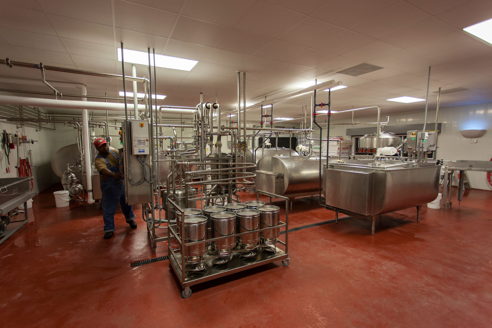

Profil Perusahaan
Mengenal PT. Great Giant Livestock Dairy Operation sebagai perusahaan yang bergerak dalam kegiatan peternakan sapi perah dan produksi susu segar pasteurisasi di Terbanggi Besar, Lampung Tengah.

2015
Tahun
Berdiri
1.500
Liter per Jam
Kapasitas Pasteurisasi
Mengenal GGLC Dairy Operation
PT. Great Giant Livestock Dairy Operation atau PT. GGLC Dairy Operation merupakan perusahaan yang bergerak dalam bidang peternakan sapi perah dan produksi susu segar pasteurisasi. Perusahaan ini merupakan bagian dari Gunung Sewu Group.
Bagian dari Gunung Sewu Group
PT. GGLC Dairy Operation menjalankan kegiatan usaha peternakan sapi perah dan pengolahan susu sebagai bagian dari unit usaha Gunung Sewu Group.
Berlokasi di Lampung Tengah
Kegiatan operasional perusahaan berlokasi di Jalan Terbanggi Besar KM. 77, Kecamatan Terbanggi Besar, Kabupaten Lampung Tengah, Provinsi Lampung.
- Didirikan pada tahun 2015.
- Memiliki ratusan sapi perah yang didatangkan dari Australia.
- Menghasilkan produk susu segar pasteurisasi.
Identitas dan Kegiatan Usaha
Gambaran umum mengenai identitas perusahaan, lokasi operasional, serta bidang kegiatan yang dijalankan PT. GGLC Dairy Operation.
Peternakan dan Produksi Susu Segar
PT. GGLC Dairy Operation menjalankan rangkaian kegiatan yang menghubungkan aktivitas peternakan sapi perah dengan proses pengolahan susu. Perusahaan memiliki ratusan sapi perah yang didatangkan dari Australia untuk dipelihara dan dikembangkan dalam lingkungan operasional perusahaan.
Susu yang dihasilkan dari proses pemerahan selanjutnya melalui tahapan pemeriksaan kualitas, sanitasi peralatan, pasteurisasi, pengemasan, dan penyimpanan sebelum didistribusikan.
Kegiatan tersebut menunjukkan keterkaitan antara pengelolaan peternakan, pengendalian kualitas, proses produksi, serta pengelolaan produk jadi dalam satu rangkaian kegiatan usaha.

Peternakan Sapi Perah
Pengelolaan dan perawatan sapi perah sebagai sumber bahan baku utama dalam kegiatan produksi susu.
Pengolahan Susu
Pengolahan susu melalui proses pasteurisasi dengan kapasitas pengolahan mencapai 1.500 liter per jam.
Distribusi Produk
Penyimpanan produk susu pada suhu dingin sebelum didistribusikan kepada distributor.
Perjalanan Pengembangan GGLC Dairy Operation
Pada tiga tahun pertama, perusahaan memiliki fokus pengembangan yang dilakukan secara bertahap, mulai dari adaptasi ternak hingga peningkatan kualitas susu.
Tahun Pertama
Adaptasi dan Perawatan SapiFokus utama pada tahap awal adalah proses adaptasi dan perawatan sapi agar mampu menyesuaikan diri dengan kondisi lingkungan serta perbedaan suhu di lokasi peternakan.

Tahun Kedua
Peningkatan Produktivitas SusuSetelah tahap adaptasi, fokus pengembangan diarahkan pada produktivitas sapi perah, khususnya peningkatan jumlah susu yang dapat dihasilkan.

Tahun Ketiga
Peningkatan Kualitas SusuTahap selanjutnya berfokus pada kualitas susu yang dihasilkan, termasuk pemeriksaan dan pengendalian kualitas untuk memastikan susu memenuhi standar perusahaan.
Pengolahan Susu Pasteurisasi
Salah satu kegiatan utama PT. GGLC Dairy Operation adalah menghasilkan produk susu segar pasteurisasi.
Proses Pasteurisasi Susu
Susu yang diperoleh dari proses pemerahan menjalani beberapa tahapan pemeriksaan dan pengolahan sebelum dikemas menjadi produk siap distribusi.
Salah satu tahapan penting adalah pasteurisasi, yaitu proses pemanasan susu pada suhu di bawah 100°C dalam jangka waktu tertentu. Proses ini dilakukan untuk mengurangi mikroorganisme yang terdapat dalam susu dengan tetap memperhatikan kualitas produk.
Proses pasteurisasi pada perusahaan memiliki kapasitas pengolahan hingga 1.500 liter per jam.
- Pemeriksaan kualitas susu.
- Pembersihan dan sanitasi peralatan produksi.
- Pasteurisasi susu.
- Pengemasan dan penyimpanan produk jadi.
Identitas PT. GGLC Dairy Operation
Informasi dasar mengenai perusahaan dan lokasi kegiatan operasionalnya.
Nama Perusahaan
PT. Great Giant Livestock Dairy Operation (PT. GGLC Dairy Operation).
Tahun Berdiri
PT. GGLC Dairy Operation didirikan pada tahun 2015.
Grup Perusahaan
Merupakan bagian dari Gunung Sewu Group.
Alamat Operasional
Jl. Terbanggi Besar KM. 77, Terbanggi Besar, Kecamatan Terbanggi Besar, Kabupaten Lampung Tengah, Provinsi Lampung.